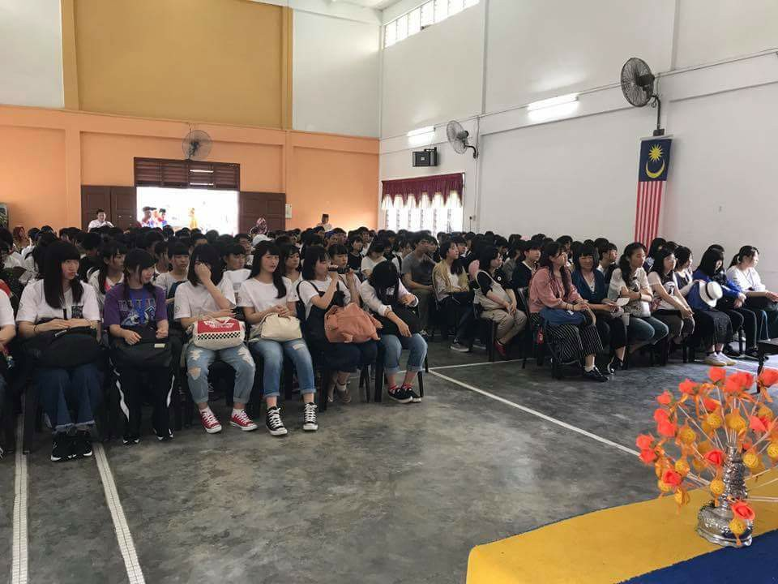
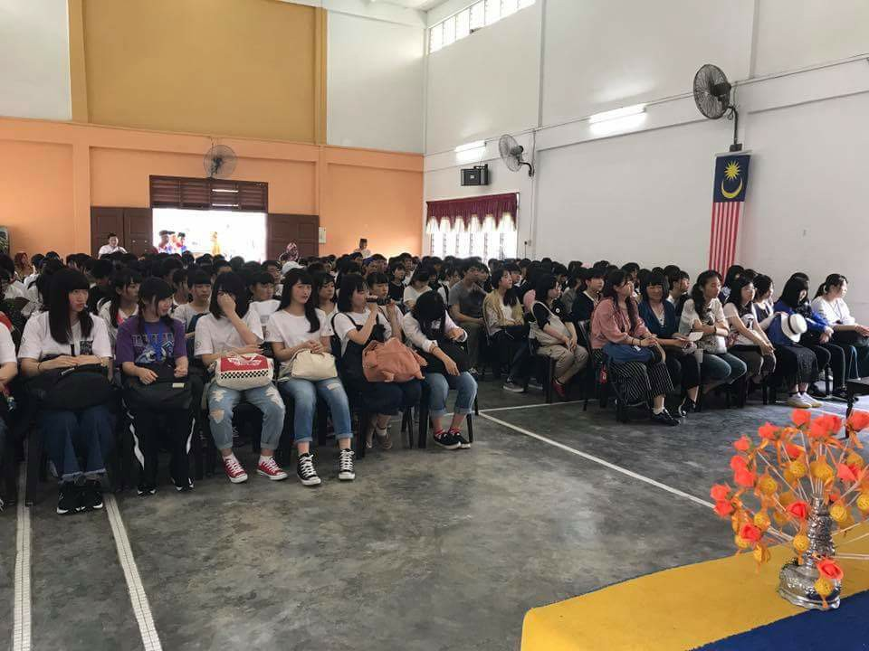

Nature
Japanese Tourist
Gunung Pulai Forest Recreational Park is a famous place for nature lovers and visitors looking for tranquilly. It has a range of attractions, including a soothing waterfall with a large swimming pool. The river banks are shaded and relaxing, ideal for picnics and aquatic sports with the family. The woodland has tar road trails for mountain climbing for individuals who prefer adventurous sports. The view from Gunung Pulai's peak is simply beautiful. Consider Gunung Pulai Forest as a tourist spot if you're in Kulai.

The residents of Kampung Sri Gunung Pulai have made good use of the community management system and the earth's treasures. The economic value of Malay culture and the politeness of the villagers attract 5,000 Japanese tourists every year, bringing in a gross income of up to RM800K every year.
 
